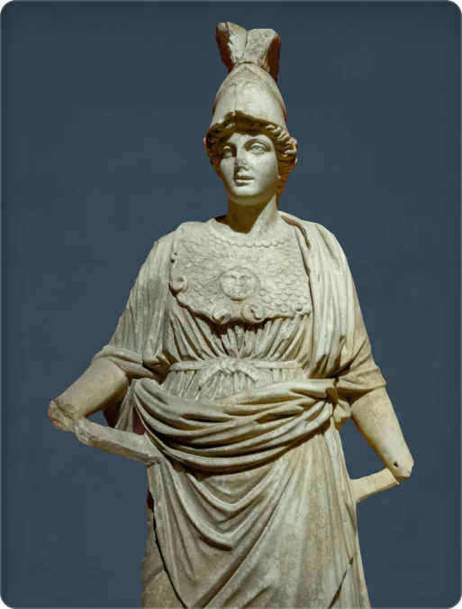

← Retour à la collection
Athéna

Un casque et une égide pour reconnaître Athéna
Le casque et l’égide ornée d’une tête de Gorgone permettent de reconnaître Athéna. Sur sa poitrine, les écailles de cette protection contrastent avec les plis du vêtement rassemblé à la taille. La sculpture photographiée correspond à l’Athéna de Perge, conservée au musée d’Antalya. C’est une œuvre d’époque romaine représentant la déesse grecque.
Époque romaine · marbre · provenance : Perge · Musée d’Antalya, Türkiye
Vues de référence : Athéna de Perge →
Crédit photographique
Photo : Yusuf Dündar / Unsplash